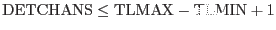

| incompatibleLowerChannelBounds | warning | |
| The channel range specified by the TLMIN and TLMAX attributes of the column CHANNEL differs from the intrinsic
channel range of the response data. If the spectral channel range
is greater than the response range, rmfgen
will pad out the response to fit the spectral range. If the spectrum contains channels that are a subset of the response range, rmfgen
will truncate the response data to match the channel range.
corrective action: Pad out or truncate response data to match channel bounds specified in spectral dataset. | ||
| invalidCCFChannels | warning | |
| The program reads the energy boundaries of the spectral channels
from the CAL and attempts to rebin these boundaries to the number of
bins in the input spectrum. If the ratio of spectral bins to CAL channel boundaries is not an integer the rebinning is not possible and so the boundaries
are defined as a regularly increasing set of energies.
corrective action: assume that the channel energies are regularly spaced. | ||
| UnknownModeString | warning | |
| The PN rmf generator is dependent on the observing mode. If this is not available from the input spectrum or is not recognised then the task defaults to using full frame mode.
corrective action: Use PRIME_FULL_WINDOW mode | ||
| NoDSSPatterns | warning | |
| The RMF generated is dependent on the event patterns used to create the spectrum. If these can not be read from the DSS in the spectrum header then the task assumes that all patterns
have been used.
corrective action: Assume all patterns selected | ||
| invalidChannelLowBound | error | |
|
The TLMIN attribute value
for column CHANNEL is not zero
| ||
| invalidChannelBounds | error | |
|
The values of attributes TLMIN and TLMAX
for column CHANNEL and attribute DETCHANS
are not such that
.
| ||
| invalidChannelOffset | error | |
|
The channel offset specified by attributes SPECPIX, SPECVAL
and SPECDELT does not correspond to an integer value.
| ||
| incompatibleEnergyRanges | error | |
|
If withenergyranges is set to true,
and responsedata is set to `cal',
then this error is raised if the requested range specified by parameters
energymin and energymax is
outside the range over which response data is defined in the CAL.
| ||
| invalidResponseChannels | error | |
|
rmfgen
is supposed to pad out/truncate the response data to match the spectral channel range. This error is raised if this
particular algorithm fails. An SPR should be raised.
| ||
| noPhaElements | error | |
|
Prior to regrouping,
no detector channels could be found
in the response matrix above the threshold level
specified by the threshold parameter.
This error is raised at a different point in the grouping algorithm
to the error noGroups below - such an err
| ||
| groupingInvalid | error | |
|
No groups of contiguous response elements above threshold
could be found in the response matrix, although the maximum number
of PI elements found in any one channel is greater than one. This
suggests a problem with the grouping algorithm, and an SPR should be raised.
| ||
| tooFewDataPoints | error | |
|
There are less than 2 data points in the dataset
specified by the parameter photondistset
(and modelpileup is set to true).
| ||
| TooManyChannels | error | |
|
The spectrum contains too many data channels. The EPIC calibration
is defined for a certain PI channel binning. If this is
exceeded then the task can not produced a meaningful matrix.
Please recreate the spectrum using the standard number of
channels or less. The current standard is 800 MOS bins from
PI channels 0 to 11999 and 4096 PN bins from 0 to 20479.
| ||
| InvalidPatterns | error | |
|
The patterns in the datra subspace are not the standard selections.
See the XMM SAS User Guide for more information about the
supported patterns.
| ||
| NoRawCoords | error | |
|
Literally means an incorrect treatment of the CCF within the task.
It can probably only arise if the REDIST CCF being used is corrupt.
| ||
| invalidEventfile | error | |
|
The raw event file, containing all the charges recorded in the
CCD where the source is centred, does not have the expected
format. See section3.9 for details of how
to create the file.
| ||
| NonStandardChanRange | error | |
|
The input spectrum has been created using a different channel
range to the one recommended. As the response
function is normalised over the channels contained in the input
spectrum this will lead to an incorrect RMF which is likely to
give wrong spectral fit results. The task can be forced to
produce an RMF anyway by setting the parameter
acceptchanrange=yes .
| ||
For other warnings and errors please see the arfgen user guide.